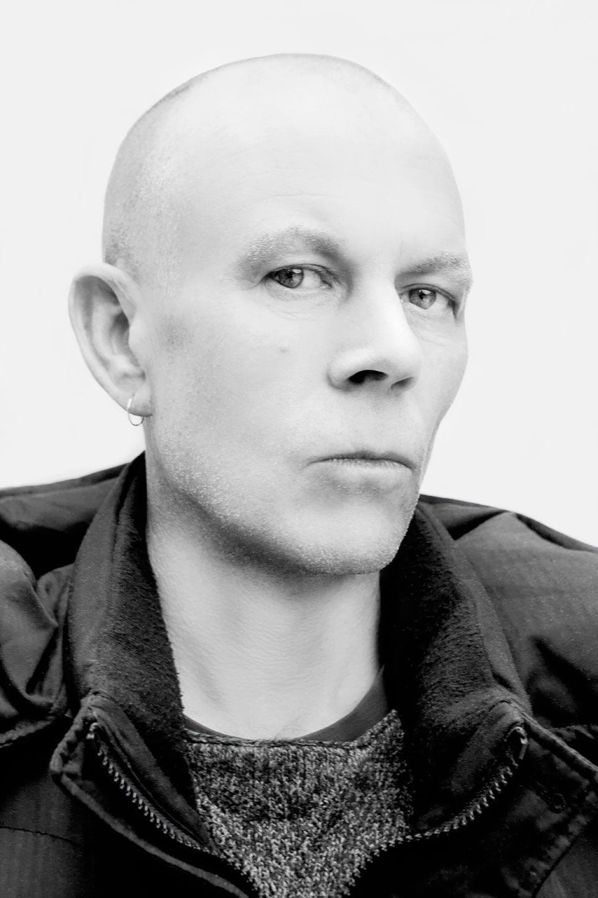

VINCE CLARKE

Vincent John Martin nació en South Woodford en Essex, Inglaterra, pero creció en Basildon en el mismo condado. Hijo de Dennis Martin y Rose, tiene tres hermanos: Carol -su hermana mayor- y sus hermanos menores Rodney y Michael -apodado Mick-. Desde niño tomó clases de violín y de piano.
Zurdo para escribir -aunque toca la guitarra como diestro-, en 1976 integró una banda llamada No Romance in China donde se encargó de tocar la guitarra y cantar, mientras Andrew Fletcher tocaba el bajo. Susan Ryder Paget (más conocida como Sue Paget, quien tocaba el bajo y hacía coros en The Vandals -banda donde también estaba Alison Moyet-), y Pete Hobbs -batería- completaron la formación. Hobbs también tocaba en otra banda llamada Norman and the Worms con Phil Burdett y Martin Gore.
En 1979, Vince formó otro dúo de guitarras con Robert Marlow, llamado The Plan, al que se incorporarían Perry Bamonte -quien en el futuro integraría la banda The Cure- en bajo y Paul Langwith como baterista. Poco tiempo después, Marlow cambiaría su guitarra por un sintetizador.
Poco tiempo después, Robert Marlow y Gore forman la banda French Look. Al tiempo que esto sucedía, Vince retoma su sociedad con Fletcher e incorporan a Gore, entonces nace Composition of Sound. Al principio, Vince cantaba y tocaba la guitarra, Fletcher y Gore se repartían entre bajo y guitarra. Existen versiones que dicen que Vince tocó en French Look pero no hay confirmación de esto.
Tras un breve receso, French Look suma a Paul Redmond como integrante. Realizan dos presentaciones donde tocan junto a Composition of Sound -Gore, quien participaba en ambas bandas, debía cambiarse de vestuario para disimular-. Finalmente, Gore se quedaría en Composition of Sound.
En 1980 el trío se encontraba ensayando en un salón de eventos artísticos del condado, en donde Vince escuchó a un chico llamado David Gahan cantando “Heroes” de David Bowie, al que pronto invitó a convertirse en el cantante de su grupo. Gahan aceptó y sugirió cambiar el nombre a Depeche Mode. Vince cambió la guitarra por un sintetizador y pronto lo siguieron Gore y Fletcher interesados también por el género electrónico, si bien Vince era el único que verdaderamente dominaba el teclado.
Ya como Depeche Mode, el ahora cuarteto de tecnopop consiguió grabar la canción Photographic, escrita por Vince, para un recopilatorio de nuevas promesas, en un pequeño sello promotor de música electrónica llamado Some Bizzare Records, del productor Stephen John Pearce, conocido como Stevo.
Vincent John Martin decidió cambiar su nombre por el de Vince Clarke, ya que cuando empezaron los shows, él se encontraba acogido al seguro de desempleo. Poco después lograron grabar su primer disco, concebido casi completamente por Vince excepto por dos temas de Gore, en otro sello pequeño de música electrónica de nombre Mute Records, de Daniel Miller, ello por la insistencia de Clarke de no acercarse a las grandes compañías de música y conservar un espíritu independiente. Fue así que Clarke dio al grupo su primer gran éxito, el tema bailable Just Can’t Get Enough, mientras el tema New Life, también de Clarke, lograba otro relativo buen impacto, y sorpresivamente el disco debut de Depeche Mode, titulado Speak & Spell, obtuvo más éxito del que incluso Miller había esperado.
No era lo que Clarke había deseado, él quería trabajar en el estudio y seguir explorando el potencial de los sintetizadores, por lo cual, después de ese primer disco, abandonó el grupo.
Además de su álbum debut, Clarke participó únicamente en las dos primeras breves giras de Depeche Mode, conocidas sólo como 1980 Tour y 1981 Tour.
Yazoo
En 1981, tras dejar Depeche Mode, Vince Clarke respondió un aviso publicado por la cantante Alison Moyet, también de Basildon y así nació el dueto Yazoo.
Yazoo grabó dos álbumes con los que alcanzó el segundo y el primer puesto del ranking británico y tres sencillos, Only You, Don’t Go y Nobody’s Diary que llegaron a los tres primeros puestos. Además hicieron otros clásicos bailables como Situation.
A pesar del éxito de Yazoo, la relación entre ambos no era la mejor, de hecho el segundo y último álbum lo grabaron por separado, sin cruzarse en el estudio. Fue así que en 1983, con apenas un año y medio de existencia, se separaron.
The Assembly con Eric Radcliffe
También en 1983 formó un efímero nuevo proyecto con Eric Radcliffe, productor de los dos álbumes de Yazoo, y Feargal Sharkey, el excantante de The Undertones, llamado The Assembly, que tan sólo grabó un sencillo aislado titulado Never Never que alcanzó el número 4 en el ranking británico.
Clarke y Radcliffe fundaron a su vez un sello discográfico alternativo llamado Reset, el cual estuvo activo entre 1983 y 1985. En Reset grabaron -varios de ellos producidos por Clarke y Radcliffe- Robert Marlow, Absolute, Hardware y Peter Hewson -miembro de la banda Chicory Tip-. Ya para otro sello, Clarke produjo Just Me Alone, una canción de Twilight, efímero grupo integrado por Andrew Mansi y Steev Toth, futuros jefes de gira de Erasure y Nitzer Ebb respectivamente.
En 1985, Clarke grabó con Paul Quinn otro sencillo bajo el título One Day, pero fue otro dueto fugaz.
Erasure
En 1985, Vince Clarke puso un anuncio en la revista Melody Maker para encontrar un nuevo cantante. Tras probar con más de 40 postulantes, eligió a Andy Bell como cantante y juntos conformaron el dúo Erasure.
Desde entonces, formaron un dúo que ha creado clásicos como Oh L’Amour, Sometimes, Ship of Fools, Chains of Love, A Little Respect, Stop!, Drama!, Blue Savannah, Chorus, Love to Hate You, Breath of Life, Always, Run to the Sun, Stay with Me, In My Arms, Solsbury Hill o Breathe.
Erasure lleva 32 años en actividad ininterrumpida -más allá de proyectos en paralelo- y cuenta con quince álbumes de estudio -cinco números uno en Reino Unido-, más de cuarenta sencillos -29 en el top 20 británico-,4 veinticinco millones de álbumes vendidos.
Otros proyectos y aportes.
En 1984 interviene en el sencillo Ave Maria, de la banda West India Company, con sonidos varios -figura como pirotecnia-. El sencillo cuenta con cuatro canciones.
Desde su creación en 1985, el proyecto Erasure ha sido su prioridad, pero ha tenido participaciones en varios proyectos más, hasta compuso un tintineo para la compañía Volkswagen.
En 1993, Clarke realizó un CD-Sampler (que consta de bancos de sonido creados por el propio Clarke destinados a ser utilizados en samplers), titulado Lucky Bastard, siendo este el único trabajo que puede considerarse como solista hasta 2009, exceptuando las mezclas.
Entre junio y julio de 1998 se hicieron presentaciones de “Rita, Sue and Bob, too”, una obra teatral escrita por Andrea Dunbar, en el teatro West Yorkshire Playhouse de Leeds. Clarke fue el encargado de la música que constaba de varias piezas instrumentales, básicamente mini-covers de canciones populares de bandas de Synthpop de los años ochenta.
En 1998 realizó la canción Dirty Little Business Theme para la película A Dirty Little Business -también conocida como Merchants of Venus y Good Vibrations-. En dicha película también está incluida una versión de Love Affair, tema de Erasure.
Para 1999, otra vez junto con Eric Radcliffe, produjeron y programaron el primer álbum de su antiguo conocido Robert Marlow, que había sido grabado originalmente en 1984, pero obtuvo una pobre respuesta.
Poco después se asoció con Martyn Ware (del también grupo de synthpop Heaven 17 y quien había producido el álbum I Say I Say I Say de Erasure en 1994), con quien lanzó un álbum bajo el nombre The Clarke and Ware Experiment.
En 2000, realizó dos bandas de sonido, para la película Blood y para la película Bullfighter. Para 2001, publicó un segundo disco con Martyn Ware e incluyeron una canción en el álbum Music for the 3rd Millenium. Ese mismo año participó con Phil Creswick con quien ya había participado en Family Fantastic en un grupo llamado RadioActivators que lanzaron solo otro sencillo aislado.
En 2002 cedió The Floating World un tema inédito para Simple Minds. En 2003, Andy Bell intentaría llevar a cabo su primer esfuerzo solista, sin embargo pidió a Clarke su colaboración y acabaron realizando su décimo álbum como Erasure, Other People’s Songs. En 2004 coescribió con Martyn Ware el tema What Do I Want From You? para Freeform Five, incluida en su álbum Strangest Things.5
Además, para el grupo juvenil Girl Authority, otro proyecto del manager de Erasure y concuñado de Clarke, Michael Pagnotta, reescribió “Let’s Get Together”, una vieja canción suya de su etapa en Depeche Mode, en la cual puede oírse la melodía subyacente de “Just Can’t Get Enough”. También en 2008, se reunió con Alison Moyet, luego de 25 años para, nuevamente como Yazoo, realizar el Reconnected Tour que presentó sobre los escenarios a la banda, a la vez que lanzaron una caja de 4 discos (3 CD y 1 DVD) conteniendo su exigua discografía remasterizada, un disco de lados B y remezclas, así como un DVD con sus videos promocionales y un documental. Luego de la gira editaron Reconnected Live, un disco en vivo registrando uno de los conciertos.
En 2009, produjo y mezcló Lovesick, un tema de Polly Scattergood que sirvió de música para el libro Ghostgirl: Lovesick, de su cuñada Tonya Hurley. También realizó un remix de este tema.
Para 2011 aparece una remezcla del tema Behind the Wheel de Depeche Mode realizada por Clarke para el compilatorio Remixes 2: 81-11, que celebra los treinta años de la fundación de la banda; su primera participación con ellos en 29 años y además en un tema posterior a su salida. En mayo de ese mismo año participó en un festival especial del sello Mute Records en Londres, en el cual participaron también Alan Wilder con su proyecto Recoil, así como Martin Gore y Andrew Fletcher, en el cual Clarke por su parte se presentó con Alison Moyet como Yazoo, con Feargal Sharkey como The Assembly y con Andy Bell como Erasure.
En 2012 colabora con música incidental para cortos del dibujante Scott Lenhardt. También realiza una colaboración con el trío inglés de electropop The Good Natured, para el tema Ghost Train. En septiembre de ese año, se une a Ane Brun y hacen una reversión del tema Fly on the Windscreen, de Depeche Mode, para presentación de la novela de Tonya Hurley: The Blessed.
Desde 1999, en paralelo a su trabajo con Erasure, Vince Clarke se asoció a Martyn Ware para el proyecto Illustrious Company, con el que editaron dos álbumes y varios proyectos adicionales de música Ambient, que más tarde terminarían compilados en The House of Illustrious, en 2012.
Family Fantastic
Desde el año 2000 formó parte de la banda Family Fantastic, con Phil Creswick y Jason Creasy, con quienes lanzó el álbum …Nice!, en este álbum participaron Valerie Chalmers y Emma Whittle -habituales coreutas de Erasure. En 2008, Family Fantastic publica su segundo álbum.
VCMG
El 21 de noviembre de 2011 se anunció en los sitios oficiales de Depeche Mode, Erasure, Vince Clarke y Mute Records, la nueva colaboración -tras 30 años de no trabajar juntos- del mismísimo Martin Gore con Clarke, bajo sus iniciales, VCMG, en un álbum promocionado por tres EP, el primero de estos titulados EP1 / Spock, publicado en diciembre de 2011; el segundo EP2 / Single Blip, de febrero de 2012; y, el tercero EP3 / Aftermaths, a mediados de 2012. El nombre del álbum, editado en marzo de 2012 fue Ssss.
Vince Clarke & Paul Hartnoll
El 10 de junio de 2016, se editó 2Square, un álbum donde Vince Clarke se unió a Paul Hartnoll, uno de los integrantes de Orbital, bajo el nombre Vince Clarke & Paul Hartnoll. El sencillo adelanto, lanzado una semana antes fue Better Have a Drink to Think.7
Trascendencia
Se considera que Clarke es uno de los más importantes e influyentes precursores del movimiento de música electrónica, de hecho fue por él que Depeche Mode surgió como grupo de ese género. Clarke es también un compositor prolífico, lo cual se demuestra con los múltiples discos de todos los diferentes proyectos en los que se ha visto involucrado, sobre todo en Yazoo y en su sociedad con Andy Bell en Erasure.
Vince Clarke fue nombrado en diciembre de 2013 el músico más popular de los años 80 por la revista “Classic Pop” en una encuesta para encontrar los 100 mejores sencillos, elegidos por sus propios de sus lectores. Clarke tiene sencillos en esta lista con Depeche Mode, Yazoo e Erasure.